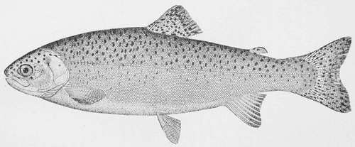

Black-Spotted Trout-Salmo Purpuratus
Description
This section is from the book "American Game Fishes", by W. A. Perry. Also available from Amazon: American Game Fishes: Their Habits, Habitat, and Peculiarities; How, When, and Where to Angle for Them.
Black-Spotted Trout-Salmo Purpuratus
This fish is known as the "Trout," "Mountain Trout," "Spotted Trout," "Black Trout," "Silver Trout," etc. in the mountains, but when in the ocean, full grown, as "Salmon Trout," or "Steel Head." The Indian name, "Preestl," is also ascribed to it on the Upper Columbia. It reaches a weight of thirty pounds under the most favorable circumstances, but may be found in any stream or lake, of any length from two inches up to two or three feet. Unlike 5. Gardineri, the young are very common, and it probably begins breeding in mountain streams, at a length of less than a foot. It is universally distributed through the Rocky Mountain region, chiefly east of the Sierra southward, but reaching the sea from Mount Shasta northward. It occurs in every lake of New Mexico, Utah, Western Colorado, Wyoming, Montana, Idaho, Oregon, and Washington. Every stream throughout the most of this region abounds in them; in Puget Sound the young of every size occur in the salt waters in abundance. Individuals are occasionally taken along the California Coast.
Local variations occur in abundance. Specimens from Seattle have the scales notably larger than those from Victoria and Astoria, which agree with Utah Lake specimens in this respect. Those that live in the depths of shady lakes are almost black, while others are pale. Those in the sea are silvery, and only faintly spotted. Only in Lake Tahoe, do the variations assume any marked importance (var Hen-shawi.') Individuals intermediate between this species and 5. Gardineri are not rare, and there is no doubt that the latter is simply an offshoot from this general stock, as are S. iridcns and .S. stomias. It feeds on any living thing it finds near it. In the mountain lakes it spawns in the spring, running into the rivers for that purpose. Its great enemies, at that season, are the various species of Suckers and Chubs, which feed, the former upon its eggs, the latter upon the young Trout. So very destructive are the former in many Trout lakes, as Utah Lake, that the destruction or diminution of the Suckers ought to be accomplished by law. A parasitic tapeworm, Dibothicrium corticeps, Leidy, is said to frequently infest this species so as to render its flesh uneatable in the summer, in the Yellowstone Lakes. (Yarrow.)
As a food fish this Trout is excellent. Large numbers of the variety Henshau<i are shipped to the market of San Francisco. Attempts have been made to cultivate it in ports of California, with success. A small hatchery has been established at Tahoe City for the purpose of keeping stocked a small branch of the lake in which summer visitors may fish. In the opinion of the writer this species is likely to prove much more valuable for introduction into eastern waters than the Rainbow Trout. It is more active, more gamy, reaches a larger size and thrives in a greater variety of waters.
The habits as well as color and shape of the Rocky Mountain Trout vary in different waters, but in all cases are widely different from those of the eastern Brook Trout. The latter loves to hide under a log, a drift, or a rock, while the former seeks an open riffle or rapid for his feeding or lounging ground and when alarmed takes refuge in some deep open pool, but rarely or never under a rock or log. Fontinalis is a lover of dark, shady nooks, while Piirpiiratus always prefers the sunniest parts of the lake or stream. The eastern Trout feeds till well into the night, many a basket being filled with him, after the shades of night have drawn over the water; while his mountain cousin usually suspends operations promptly at sunset.
As to game qualities, the western Trout is every inch the peer of his eastern congener; and some anglers have claimed that his first rushes were even more vicious, and that he was a wickeder tackle-smasher than the civilized Trout. It is difficult to judge accurately on this point, certain individuals of either species possessing more of the wild-cat impulsiveness than the average of their fellows; but there can be no doubt in the minds of those anglers who have thoroughly studied both species under all the varying conditions of season, character of water, weather, etc., that the Rocky Mountain Trout is not excelled in game qualities by any species of this noble family.
Generally speaking, the same tackle is required for the average Mountain Trout as for Brook Trout. If, however, one is to fish some of the larger creeks and rivers that have not been "fished out," so that a lusty five or ten pounder is liable to be encountered, then Salmon tackle should be employed. These very large ones rarely take a fly, however; but when they do, the best double-gut leader, the best number 6 braided silk line and a ten or twelve ounce split-bamboo rod will be taxed to their utmost to land him. Several cases are on record wherein a six or eight inch Trout has been taken on the fly, and while being reeled in has been swallowed by one of these ten-pounders. Where very light tackle was being used, the big Trout of course took it, and walked off with his tail over his back; but in other cases the implements and the skill of the man at the other end of them were sufficient to stay with him, and then a fight has ensued that can only be compared to that of a wild grizzly that has been roped by an intrepid cowboy.
As to flies, I have usually found a brown hackle and a white moth the most killing for Mountain Trout-the former for sunshiny weather, and the latter for cloudy weather or for morning and evening. Both should be of large size-such as are made for Bass and Salmon-and should be tied on 3-0 Sproat or Limerick hooks, and these mounted on the best double and twisted gut snells.
The Rainbow Trout. Salmo Iridens.
Generally speaking, it is not sportsman-like or esthetic to use bait in taking Trout, but there are times when no fly in the book will lure the Mountain Trout; and at such times the angler is justifiable in resorting to more substantial diet, especially if he have traveled a long distance and incurred a heavy expense to reach the mountains. At such a time he need not seek farther than the plebeian grasshopper. For all-around work, every day in the week, it is the most killing bait extant. There is not one Trout in a hundred but will pounce upon a good fat 'hopper, like a hungry dog on apiece of raw liver, and if you are on a stream that has Trout in it, if you have good tackle, a tomato-can full of 'hoppers and then don't fill your creel it's your own fault. The only Mountain Trout that ever turns his tail to a grasshopper is the big old fellow-the ten-pounder-the "Cannibal Trout" of the Bitter Root; and almost the only bait that will raise him out is a minnow or a baby Trout.
Continue to: